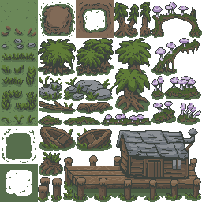

UNITY 2D - Tilemaps, 2D Characters, and Pixel Art UNITY 2D - Tilemaps, 2D Characters, and Pixel Art
This tutorial covers Unity's Tilemap system for 2D projects (started 2017), 2D Character animation (both pixel and smooth-drawn styles), and how to make Pixel art. Are you new to photoshop? Watch this short Intro to Photoshop video
| ||||||
| CREATING TILEMAP BACKGROUNDS: |
|
A Tilemap requires three parts: PART 1: The Art in the Project panel PART 2: The Tilemap in the Scene PART 3: The Palette in the Tile Palette Once these elements are in place: PART 4: Multiple Tilemap Layers can be created with varied scripts and collision Components that only effect the art painted into those Tilemaps. |
||||||
|
PART 1: The Art in the Project Panel:  ENVIRONMENT TILEMAP:
ENVIRONMENT TILEMAP:
Your Tilemap.png can include any intended background elements for a level, as long as they can be organized as rectangles of equal size. The file must be power-of-two square. Large maps are laid out in a grid of 16 x 16 squares that are each ALSO power-of-two square:  256x256 Tilemap
each tile 16x16 pixels 512x512 Tilemap each tile 32x32 pixels
1024x1024 Tilemap
each 64x64 pixels 256x256 Tilemap
each tile 16x16 pixels 512x512 Tilemap each tile 32x32 pixels
1024x1024 Tilemap
each 64x64 pixelsNOTE: You CAN use multiple PNGs to make the art for one level. Different game levels typically get at least some different tilemaps (to show distinct places). SIZING: Pixel Art vs Other Painted Styles: Tilemaps can work with any style of art.
16 x 16 pixels per square (see this 256x256 PSD file), set in Unity as 16 pixels per unit (with Compression = none and Filter Mode = Point (no filter) so the pixels are crisp and unblurred).
32 x 32 pixels per square (see this 512x512 PSD file), set in Unity as 32 pixels per unit (leave Compression and Filter Mode at defaults).
For each of these choices the art in unity increases resolution but not size: they are all still one unit in Unity by setting the Pixels Per Unit in the Inspector. ADDING STAND-ALONE SPRITES: You can combine Tilemap work with big sprites. Want a large setpiece rock in your scene? Add it to the hierarchy as a separate sprite and set the Order in Layer to display correctly behind or in front of the player and colliders. |
 PSD file
|
|||||
|
NOTE #1: HOW TO ITERATE TILEMAP SPRITESHEETS: It is OK to make your spritesheet art in stages. Fill some unit squares with art, save a PNG and import that asset into Unity. Just make sure ALL UNUSED SQUARES have a DOT so Unity knows to reserve that space for future art (and not recalculate tile numbers). When you revise the map later to fill more squares, save the new PNG over the old one in the project folder, to auto-populate everywhere it was used (RightClick the asset in Unity to open the folder on your computer, and overwrite the image there, not directly in Unity). IMPORTANT: AGAIN, from the very first PNG export, you must DOT every unused square to ensure those squares generate placeholder tiles in Unity (so the sprite-order is preserved when you add more art later). |
||||||
NOTE #2: PIXEL ART VS SMOOTH-DRAWN STYLES
Image #1 is 256 x 256, with art drawn as sharp pixels (16 pixels per square). Image #2 is 1024 x 1024, with art drawn in smooth, hi- res (64 pixels per square). |
||||||
NOTE #3: WHAT ART SOFTWARE CAN I USE?
The teacher uses Photoshop for all examples shown on this tutorial. Students who prefer Procreate are encouraged to start by importing one of these provided PSD files, and working from there to be sure the file meets all of these requirements: 256 x 256 .PSD, 512 x 512 .PSD, 1024 x 1024 .PSD. Please also note: If a PNG exported from Procreate isn't working properly in Adobe programs like Photoshop (or in Unity), the iPad "Photos" app may be altering the image transparency when saving, causing the issues. The solution is to export your PNG directly to "Files" instead of saving it to your photo library on the iPad. | ||||||
|
USING MULTIPLE SIMPLER MAPS: Instead of painting all of the art in a single Tilemap, we can separate each texture type into its own tilemap. This can be conceptually easier to understand, and is also helpful for making faster RuleTiles (which make painting levels much easier / faster).
|
|||||||||||||

|
PART 2: Adding a Tilemap into a Scene: Create a Tilemap: (video source) 2.1. In a Unity 2D Project, create a folder called "Tilemaps": 2.2. Drag or import the Tilemap.png image into the Project > Assets folder. In the Inspector set: Texture Type = Sprite (2D and UI) Pixels Per Unit = 16 (or 32, or 64, or 256 depending on your chosen file size) Sprite Mode = Multiple Filter Mode from Bilinear to Point (no filter) Compression = None Hit [Apply]. You will see transparency activate in the image because it is a Sprite, and you can now use the sprite editor because it is set to Multiple. | Click for bigger images
|
| 2.3. Open the [Sprite Editor]:
Hit Slice to open the slice options Change type to Grid by Cell Size Set Pixel Size =16 x 16 (or 32 x 32, or 64 x 64, depending) Hit the [Slice] button and then hit [Apply]. Close the Sprite Editor. 2.4. In the Hierarchy create a GameObject > 2D Object > Tilemap. This creates a Grid Object with the Tilemap object parented below (just like UI Text or Image under Canvas). Rename Tilemap "Ground_TM." NOTE #2: The position of all Tilemaps in the Hierarchy should always be (0,0,0), so they line up with each other! |
|
| PART 3: The Palette in the TilePalette:
3.1. In the Project Panel > Assets > Art folder: Create a folder named "Tilemaps_Bits". This is the folder for the hundreds of little tilemap squares that will be created by the Tile Pallete process. We don't want these pieces to be in the same folder as our actual Tilemap art, or anything else we care to find. Hide the bits in the Tilemap_Bits folder! 3.2. Open the Window menu > 2D > Tile Palette. Hit the "Create New Palette" drop-down on the left. Name it "Ground". Hit [Create], and choose the "Tilemaps_Bits" folder in your Assets folder to hold it. 3.3. Drag your Tilemap.png image into the work area of the Tile Palette panel. When prompted save it into the Tilemaps_Bits folder, to hide the bits there. Wait until data is generated. Optionally dock the panel next to the Project and Console. |
|
| 3.4. Select a square in the Pallette.
The brush Paint function is selected automatically. In the Hierarchy select your Tilemap layer and click and drag in the Scene viewport to "paint" that square into the Ground tilemap. [Alt]+[MiddleMouse] to pan the Tile Palette. 3.5. To drag-fill in a larger area quickly, try the square icon for BoxFill. We can also trace a shape and then fill the inside with the paint bucket icon for FloodFill. Try starting with a space about 4x the size of the play-screen rectangle (indicated as a light rectangle in the Scene view). Add walk-able areas: draw the grass and then add the paths. |
|
| PART 4: Multiple Tilemap Layers for Colliders and Scripts:
4.1. For collide-able elements, create a new Tilemap Layer: With your Grid selected in the Hierarchy, RightClick the Grid and choose 2D Object > Tilemap. In the Inspector rename it "Colliders_TM." Under Tilemap Renderer > Additional Settings set Order in Layer = 10. 4.2. To draw on the new Tilemap layer, change the Active Tilemap at the top of the Tile Palette panel. 4.3. To bring a multiple-tile object into the scene (like a house): select the entire house in the Palette, then use the brush Paint tool to draw it in the scene. |
|
| 4.4. To add collision to your Collider layer:
With the Collider_TM Tilemap layer selected, add three Components: This creates a collider around each tile in the Collision Tilemap (works, but wasteful). To optimize this, apply two more Components: Rigidbody2D
Set Body Type = Static (NOTE: an OnTrigger interaction, like blocking bullets, may need Body Type = Kinematic). Composite Collider 2D
Change Geometry Type from Outlines to Polygons. Back up in the Tilemap Collider 2D, set Composite Operation = Merge
(in versions before Unity 6, instead enable " Used by Composite".) NOTE: The default Composite Collider Geometry Type, "Outlines", is fine for a slower game, where the intent is to prevent the player and other objects from passing through at modest speeds. But in a fast-paced game "Outlines" may allow the player to pass inside the colider. So we change the Geometry Type from Outline to Polygons. 
|
|
| NOTE #3:
COLLIDER SHAPES: Colliders are performant only if they are on simple shapes. A big wavy shape like a hillside is fine, but avoid making small details into colliders, like spindly tree branches. Make use of multiple layers where you can: For a tree, put the lower trunk that is meant to be collidable in the colliding layer, and the rest of the tree in a non-collidable background layer. NOTE #4: LAVA OR SPIKES: Want a layer to damage the player on contact? Add the same 3 Collisions Components (TilemapCollider2D, Rigidbody2D, CompositeCollider2D). Set CompositeCollider2D: isTrigger, BodyType=Polygons.
Add a script with an OnTriggerStay2D() that sends damage to the Player in the GameHandler (like DamageSlow.cs or DamageInstant.cs, in our 2D Action tutorial).NOTE #5: ONE-SIDED PLATFORMER: Want the Player to be able to jump up through a platform? To the Tilemap with Colliders [add Component]: Platform Effector 2D. In the CompositeCollider2D: turn on "Used by Effector"IMPORTANT: If we set a Tilemap Composite collider to "isTrigger" = true, then Outlines MUST be changed to "Polygons" to use internal collision detection (OnTriggerStay2D). |
 CREATING A RULE TILE FOR FASTER UNITY LEVEL PAINTING
CREATING A RULE TILE FOR FASTER UNITY LEVEL PAINTING
(source video, 02) A Rule Tile allows us to set up a helpful system of intelligent art edges to quickly paint levels in Unity. Check that "Tilemap Extras" is installed: In Unity 2021 and above, open the Window > Package Manager. With the top selection set to Unity > Registry, search for Tilemap Extras. If not yet installed, hit [Install]. Start with a 4x4 spritesheet that contains at least 13 tiles: a 3x3 grid square for all convex tiles, and 4 concave tiles. Here to the right is a pixel art example: 64x64, each tile 16x16, The same process can be done with a more painterly image: 1024x1024, each tile 254 x 254. 1. Set spritesheet parameters in the Inspector for pixel art, as usual: Pixels Per Unit = 16 Sprite Mode to Multiple Filter Mode from Bilinear to Point (no filter) Compression = None Hit [Apply] 2. Open the [Sprite Editor] as usual: Hit Slice to open the slice options Change type to Grid by Cell Size Set Pixel Size (for pixel art) =16 x 16 Hit the [Slice] button and then hit [Apply] Close the Sprite Editor. 3. Create a Rule Tile (This is the only step different from regular Tilemapping): a) In the Project panel Assets folder, RightClick to choose: Create > 2D > Tiles > Rule Tile. b) Name for intended material (like "RT_Road" for road art). c) In the Inspector: Drag a tile sprite from the Project to the top gray block, to represent the RuleTile as the Default Sprite. Set the "Number of Tiling Rules" = 13 (for 13 blocks) Drag a tile sprite from the Project into each "None (Sprite)" gray blocks:Start with the 4 convex corners. Then the 4 convex sides. Then the 4 concave corners. Finally the center block of the 3x3. (always end with the center piece). In the middle grid, set arrows and Xs to define this tile's placement:A red X goes on the closed sides of the tile art (where there are no other tiles from this RuleTile). A green arrow goes on any open sides (where it is meant to connect to other tiles in the Rule Tile). d) The order of the added tiles matters a bit: put the center tile at the bottom (to make it lowest priority). 4. Add a Tile Palette to hold your Rule Tile: a) Open Window menu > 2D > Tile Palette b) Hit "Create New Palette", enter a name like "Road_Palette", and hit [Create]. c) When Unity asks for a folder to place it in, choose (or create new) your Tilemaps_Bits folder under Assets. d) Drag the Rule Tile object into the new Tile Palette (in the example to the right, both the source tilemap AND the RuleTile were dragged into the Palette. The RuleTile is the single square on the left). 5. Create the Scene Tilemap layer for your art: a) In the Hierarchy, select your Grid (if one exists). b) GameObject > 2D Object > Tilemap (rectangular). c) With this Tilemap active in the TilePallette: Select the RuleTile square in the TilePalette and paint. The tiles will dynamically switch as needed to fit the desired connections to each other, according to the rules you established with the green arrows and red Xs. Want to delve further? See this video for creating a custom rule tile script with a scriptable object. |
|
CREATING AN ANIMATED TILE FOR WATER, LAVA, etc (source video) An Animated Tile allows us to set up an image that will play through multiple tiles to create animation. Check that "Tilemap Extras" is installed: In Unity 2021 and above, open the Window > Package Manager. With the top selection set to Unity > Registry, search for Tilemap Extras. if not yet installed, hit [Install]. We start with a spritesheet that contains at least 4 tiles (this example has 3 quadrants of 4 frames each, and 4 frames, LowerRight, meant for static background): 1. Set parameters on the spritesheet in the inspector, as above: Pixels Per Unit = 16 Sprite Mode to Multiple Filter Mode from Bilinear to Point (no filter) Compression = None Hit [Apply] 2. Open the [Sprite Editor]: Hit Slice to open the slice options Change type to Grid by Cell Size Set Pixel Size =16 x 16 Hit the [Slice] button and then hit [Apply] Close the Sprite Editor. 3. Create an Animated Tile (This is the only step that is different than regular Tilemapping): a) In the Project panel Assets folder, create a new folder. RightClick the new folder to choose: Create > 2D > Tiles > Animated Tile. b) Name it for the intended material (like "AT_Lava1" for lava art). c) In the Inspector: Set the number of Animated Sprites at top to the desired frames. Drag all frames into the top boxes, in desired order. To get more frames between poses, add more copies of the frame. 4. Add a Tile Palette to hold your Animated Tile: a) Open Window menu > 2D > Tile Palette b) Hit "Create New Palette", enter a name like "Lava_Palette", and hit [Create]. c) When Unity asks for a folder to place it in: choose (or create new) your Tilemaps folder under Assets. d) Drag the Animated Tile object into the new Tile Palette. 5. Create the Scene Tilemap layer for your art: a) In the Hierarchy, select your Grid (if one exists). b) GameObject > 2D Object > Tilemap (rectangular). c) With this Tilemap active in the TilePallette, select the Animated Tile in the TilePalette and paint. Hit [Play] in Unity to see the Animated Tile animate. To change the speed, see the setings in the Animated Tile object itself. Want to delve further? This page uses multiple Animated Tiles for a waterfall. Also, see shaders using the Universal Rendere Pipeline: vid1, vid2 |

|
COMMON PROBLEMS / ERRORS: a). Objects appearing in Scene but not in the Game view? An issue with 2D games is managing the Display Order of elements. For Tilemaps and regular Sprite objects, look in the Inspector to find Sprite Renderer > Additional Settings > Order in Layer. The lower the number, the further back it appears. Also, be sure to check that your object Z-position is not behind the Camera! A 2D game Camera is typically Position z = -10. All of your 2D objects must be Position Z = 0. (As opposed to a Canvas, where the higher an image is located in the Hierarhcy the further back it appears.)
c). Script not compiling? Check the console for errors and line numbers! Most errors are about forgetting to end a line with a semicolon: ; or forgetting to have the right number and placement of nesting brackets: { } When you create a script, be sure the Class name at the top of the script matches the script name. Also, be sure all script slots are filled, either directly in the Inspector or dynamically in the script. |
|||
| Additional Unity Tilemapping Resources:
|
|||
|
PLAYER CREATION:
(video source)
Want to dive deeper into 2D animation for games? Watch this GDC video
ART CREATION STEPS: (all sizes are for the pixel art characters above) 1. For each character pose create a sprite sized 64x64, 72ppi (for pixel art). Be sure the design and each pose has strong contrast with the background: lighter and/or more saturated colors, and darker outlines. ONLY DRAW ONE DIRECTION for a platformer. Code will flip the image for movement in the other direction! 2. Export each frame as a PNG, transparent background. 3. Add each frame to a single spritesheet For pixel art: 256x256, each 64x64, up to 16 poses. For painterly art: 1024x1024, each 256x256, also up to 16 poses. Note that in the Zombie 1024x1024 example to the right: each pose is 128 x 256, for up to 32 poses. To quickly compile a spritesheet from multiple PNGs try this free site: Texture Packer Online 1. Hit [Clear] and [Add Sprites]. 2. Select all PNGs and hit [Open]. 3. Set Layout to Compact and Padding = 0. 4. Hit Download [.png] and done! |
Here are spritesheets for higher-resolution, painterly character art: Files = 1024 x 1024 Player sample, side orientation Each pose = 256 x 256 (click for larger image): This image includes: Idle(3 frames), Jump(1), Walk(6), Defend(1), Hurt(1), Attack(3), Dead(1) Download this 1024x024 PSD template file Enemy Zombie, forward-facing. Each pose = 128 x 256 (click for larger image): Enemy Bacteria spritesheet: Each pose = 256 x 256 (click for larger image): |
UNITY STEPS: 1. SPRITE SETTINGS: Drag / Import your character spritesheet into the Project panel. In the Inspector, set these parameters:Pixels Per Unit = 16 Sprite Mode = Multiple Filter Mode = Point Compression = none Hit [Apply] 2. SLICE: Hit [Sprite Editor] to open the Sprite Editor panel. Hit "Slice" (upper left), choose Grid by Cell Count, enter Columns and Rows (for the provided sheet, set it to 4x4). Hit [Apply] (upper right). |
|
|
| 3. PLAYER ART: In Project panel open Spritesheet arrow to see new sprite objects.
Drag the first image into the Hierarchy. In Inspector rename it "PlayerArt." To make PlayerArt visible above Tilemap: set Order in Layer = 100.
Reset Transforms to position at 0,0, 0. 4. CREATE EMPTY PARENT: Create a GameObject > Empty GameObject, name it "Player".
Reset Transforms to position at 0,0, 0. Drag PlayerArt onto Player to make it a child of Player.
In Inspector add tag "Player."5. ANIMATION: CREATE CLIPS: With PlayerArt selected in the Hierarchy, go to Window > Animation > Animation. a) Create clips for player_idle, player_walk, player_attack, player_gethit, and player_dead (create new clips in the rolldown under the initial clip name, upper-left). b) Drag your frames into the Timeline for each clip (downclick the triangle on the left to view the frames as art). Looping animations like a 2-sprite idle should be 3 keyframes in the timeline (Repeat the first pose at the end. Try 0, 15, and 30). | ||||
|
6. SET UP STATE MACHINE: Doubleclick the Animator in Project to open the Mecanim State Machine. a) Make sure the player_idle clip is the default (orange: if it is not, rightclick it to set as default). b) Create transitions: rightclick player_idle, choose [Make Transition], drag to player_walk and leftclick to complete. Create another transtion in the reverse direction. For Attack, GetHit, and dead, make transitions from [Any State] to them, and from Attack and GetHit to Idle (Dead is a dead-end). c) To the left of the state machine open the Parameters tab: Add a Bool Parameter called "Walk." Select the clip transitions to and from player_walk and in the Inspector add the condition "Walk" (idle-> walk = True, walk -> idle = False. Turn off "Has Exit Time," above). Also create Trigger parameters called "Attack" and "Hurt." NOTE: This tutorial just uses the one walking animation, but a Blend Tree can be used to manage multiple walking clips for walking in different directions. 7. PHYSICS: Add to the Player Game Object: Component Physics2D > BoxCollider2D. Adjust collider size and position so it is just around the bottom half. Component Physics2D > Rigidbody2D.
Set Constraints > Freeze Rotation Z. If this game is a sidescroller, leave Gravity on. If this is a top-down game, set Gravity = 0. | ||||
|
8. PLAYER MOVEMENT SCRIPT: Create a new C# script, name it "PlayerMovement.cs". Apply to the parent game object.
NOTE: This script depends on a "GameHandler" to hold the Centralized State: all health and other stats. When any enemy or environment hazard does damage to the player, it goes through this object: an Empty Game Object with a GameHandler script and a GameHandler tag. 9. RightClick the Project panel to create a new Physic Material 2D. Name it "PlayerSlippery." In the Inspector set Friction = 0.1. Select the Player and Drag it into the Collider Material slot. | ||||
|
EXPLOSIONS: ANIMATING A VISUAL EFFECT: 1. Create a VFX spritesheet and export as a PNG: 64x64, each image 32x32 (or download this): 2. Import the PNG into Unity: Select the Project panel Assets folder, RightClick, hit "Import New Asset", and choose your file.  3. Select the PNG in the Project panel. 3. Select the PNG in the Project panel. In the Inspector set the following and hit [Apply]: Sprite Mode = Multiple Pixels Per Unit = 16 Filter Mode = Point (no filter) Compression = None  4. Press [Sprite Editor] button in the Inspector to open the editor. Open the Slice button. Set Slice > Type= Grid by Cell Count: 2 x 2. Hit [Apply]. 4. Press [Sprite Editor] button in the Inspector to open the editor. Open the Slice button. Set Slice > Type= Grid by Cell Count: 2 x 2. Hit [Apply].5. Drag the first new image into the Hierarchy. In the Inspector name it "Boom" and set Order in Layer = 105. 6. Create a folder under Project panel > Assets > Media called "Animation". 7. Open Window > Animation > Animation. With Boom selected hit the [Create] button at the center. Choose the new Animation folder, and name the new clip “boom_anim”. Hit [OK].  8. Drag all 4 sprites into the timeline top. Spread the keyframes out between frames 1-30. Drag the last sprite in a second time and place it at the end, for a total of 5 images set to frames 1, 10, 20, 30, 40. Hit the Animation Play triangle to see the Scene copy animate. Adjust timing as you desire. Close the Animation panel. 8. Drag all 4 sprites into the timeline top. Spread the keyframes out between frames 1-30. Drag the last sprite in a second time and place it at the end, for a total of 5 images set to frames 1, 10, 20, 30, 40. Hit the Animation Play triangle to see the Scene copy animate. Adjust timing as you desire. Close the Animation panel. 9. Make it into a prefab: Drag the Boom object from the Hierarchy into the Project panel. Delete the original from the Hierarchy. 10. Instantiate with a script: Normally this explosion would be activated for a gameplay purpose. To create a bullet impact, for example, the script to create the effect would be applied to the projectile. Here we will ceate a simple script to "instantiate" (generate) an explosion VFX on a keypress: a) Create an Empty Game Object. In the Inpector name it "Boomer" and reset Transforms. b) Create a new C# script, name it "Boomer.cs". Add the following, save, return to Unity to comile, and apply ti to the Boomer Game Object. c) Drag the BoomVFX Prefab from the Project panel into the Boomer script "Hit VFX" slot in the Inspector.
Hit [Play] and then hit [Spacebar] to see the VFX animation! |
||||
|
CAMERA: FOLLOW WITHIN SET LIMITS: VERSION 1: The quickest way to get the camera to follow the player is to simply Set the Main Camera Position X and Y to 0 and drag it onto the Player to make it a child. This is a quick but undesirable solution: it is jittery and unbounded (without limits, it allows us to see beyond the edges of the world, and breaks the immersion). Hit Play and walk the character around to test collisions! VERSION 2: Add a script for a Smooth, Bounded Camera: For a camera that follows the player but does not show outside the play area, unparent the Main Camera from the player and apply CameraMoveBounded.cs script. In the Inspector, drag the Player into the "target" script slot and enter the Max and Min position X and Y values for the UpperRight and LowerLeft corners of the space. The easiest way to get these values is to move the Camera to those corners and copy Transform values. If the original space was 2x the game screen size, try max = 2 x 10 and min = -10 x -2. NOTE: LERP takes 3 arguments: current position, destination, and speed. CLAMP limits the range of a value between two other values.
|
||||

{kind=link}
{kind=link}
|
| |||||||||||||||
Pixel Art Best Practices Advice (video sources: 01 | 02 | 03 | 04 ) : For each main color, make darker & lighter versions for shadow & highlights (shift hue as well as value).
"Symmetry in shape, asymmetry in color"
Pixel Art is about doing a lot with as little as possible. What do you need to make the object or character recognizable? Which part of a character needs to be emphasized for the gameplay? Plan out the relative sizes of objects, and make their pixel detail consistent. A pixel art reference image to see the sizes of characters and other elements helps to keep the team on the same page.
If scaling up a piece of pixel art for promotional purposes, only scale on multiples of 100, so the art is not distorted (at 150%, would need to fit 2 pixels into a space of 3).
Usually, we want consistent line thickness (1-2 pixels, usually 1).
Avoid "pillow shading" -- choose a direction for the light and be consistent.
Avoid banding, where all levels of light get equal thickness. Instead, give most to the light and dark areas, with a thin band of penumbra in the middle (if any). Only shade where needed (avoid blurriness of overshading).
No gradients: Use Flat colors with variation.
"Dithering" is the loose pixels on a surface to break up the form. Use them sparingly to represent the texture of the surface, like wood grain or variations on stone.
ANGLE: typically, all architecture faces the screen tilted downwards, so we see the front and the top but not the sides. For designing your Tilemap.PNG: "Base" ("Background") tiles should fill the square and not include opacity; Grass will typically be one tiling square, through more could be added for variety. A dirt path would be built out of 9 squares: four sides that can tile in one direction (vertically or horizontally), corners, and a center image that tiles in all directions (NOTE: A Rule Tile makes easier painting of roads/pipes/ etc.: using the 2D Extras pack template to auto-choose the correct tiles when drawing. Video sources: 01 | 02). "Standing" objects like bushes, trees, and architecture include opacity so we can see base tiles through them. They are built from the same units, so a horizontal fence might be one 16x16 square unit, while a tall tree or statue might be two units vertically, and a house might be nine or more units in a square. | |||||||||||||||
{kind=link}
|
Tutorial by Jason Wiser, Madwomb.com. See more Unity tutorials at http://www.Madwomb.com/Unity |